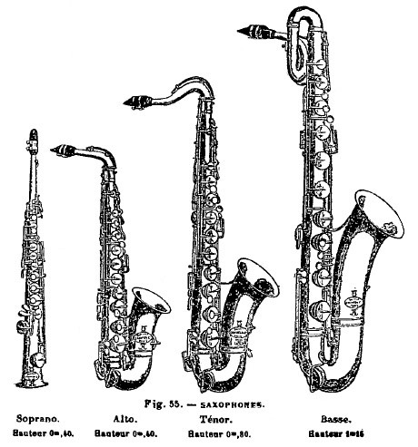

Faktaark - Saxofon
| Noen dyktige saxofonister |
||
|---|---|---|
| Navn |
Saxofontype | Musikkstil |
| Daniele Vitale |
Tenor |
Pop |
| Derek Brown |
Tenor | Pop / Beatbox |
| Leo Pellegrino |
Bariton | Brasshouse |
| Jim Rolland |
Alt | Freestyle |
| Jim Cheek og Scott Jenkins |
Alle | Alle |
Vet du at:
Bildet over viser de fire vanligste saxofontypene. Tenorasaxofonen er en av flere saxofontyper. Tenor- og altasaxofon er de vanligste, etterfulgt av bariton- og sopransaxofoner.
- Saxofonen ble oppfunnet i 1840 av den Belgiske instrumentmakeren Adolphe Sax.
- Saxofonen er klassifisert som en treblåser
- En komplett saxofon består av: Flis, munnstykke, ligatur, hals og kropp